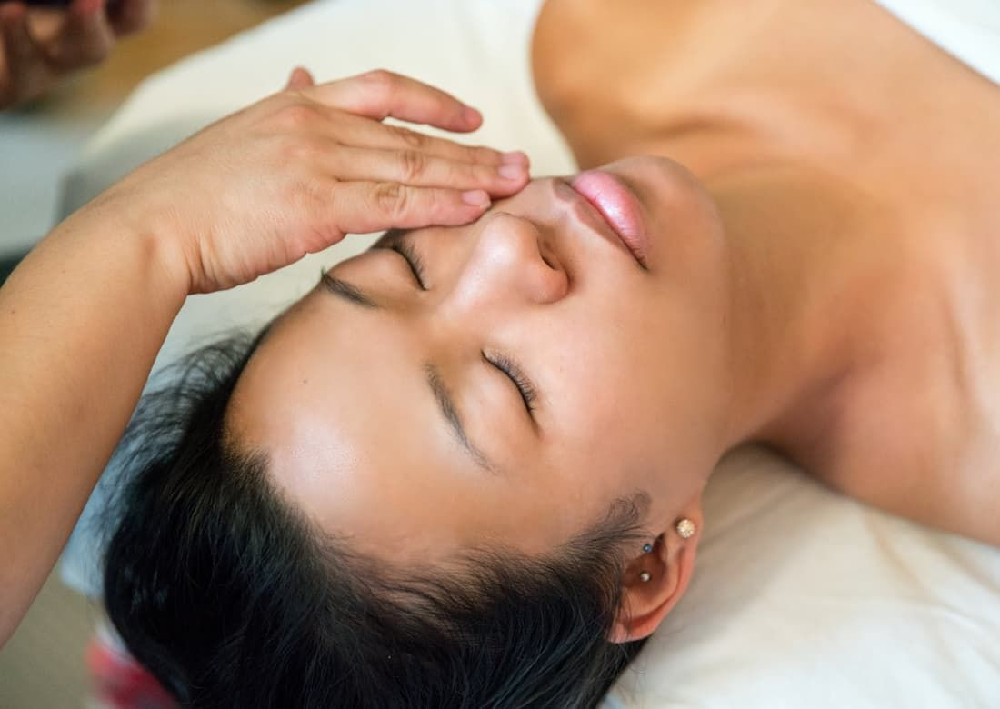
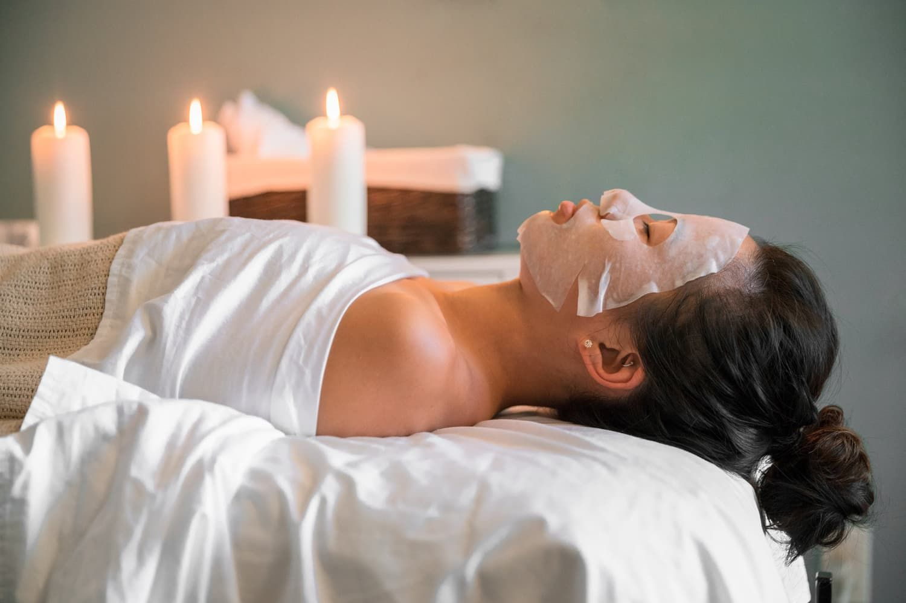
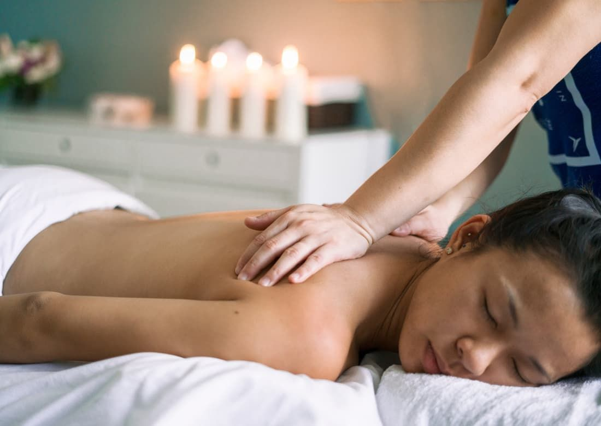
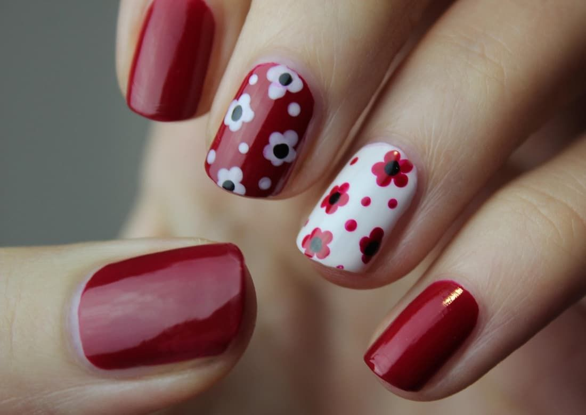
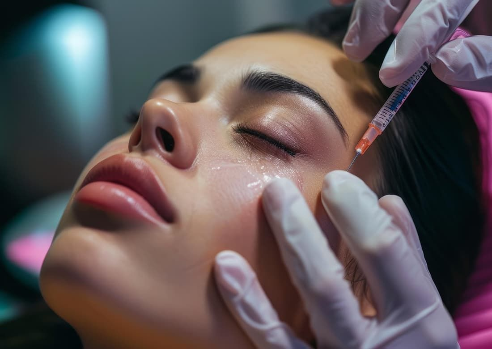
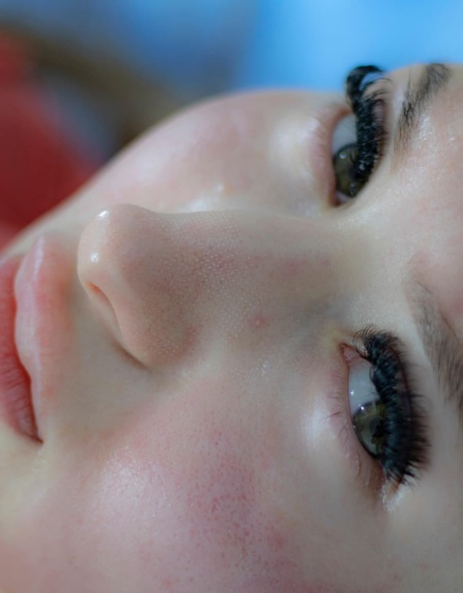
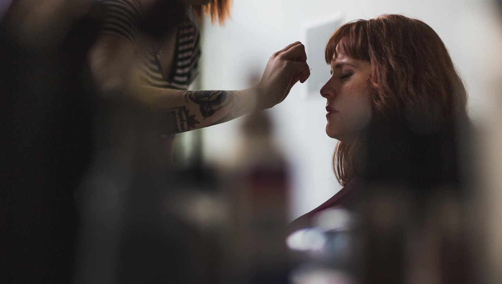

Ritual do rosto
Limpeza profunda, peelings, microagulhamento e protocolos de acne. Começa sempre pela leitura da pele com lupa e termina com o roteiro de casa escrito na mão.
- Duração
- 60 a 90 minutos
- Indicado
- oleosidade, manchas, textura

LumeCaxias do Sul
Estúdio de estética facial e corporal em Caxias do Sul. Uma cliente por vez, protocolo definido na avaliação, sem sala de espera cheia e sem pressa.
Uma por vezA agenda é aberta para uma cliente por horário. Ninguém entra na sala enquanto você está nela, e a sessão não é encurtada porque a próxima chegou.
Protocolo, não pacoteNa primeira visita a gente olha, pergunta e escuta antes de indicar qualquer coisa. O que sai dali é um plano com começo, meio e fim, não uma assinatura mensal.
Você entende o que está sendo feitoCada etapa é explicada antes de começar: o que o produto faz, o que você vai sentir, quanto tempo a pele leva para responder e o que evitar depois.
arraste para o lado

Limpeza profunda, peelings, microagulhamento e protocolos de acne. Começa sempre pela leitura da pele com lupa e termina com o roteiro de casa escrito na mão.

Massagem modeladora, drenagem e cuidados para gestante, com pressão ajustada durante a sessão. Sem pacote fechado antes da primeira avaliação.

Manicure russa, spa de mãos e alongamento em fibra. Material esterilizado em autoclave, com envelope aberto na frente da cliente.

Bioestimulador, skinbooster e tecnologias de firmeza, feitos apenas depois da avaliação presencial e com acompanhamento de retorno marcado.

Você senta, conta o que te incomoda e o que já tentou. A gente pergunta sobre rotina, sono, medicação e sol, porque a pele responde a tudo isso. Nada é aplicado nesse primeiro momento.
Com lupa e luz apropriada, olhamos textura, oleosidade, manchas e sensibilidade. É aqui que muita expectativa se ajusta: às vezes o caminho é mais curto do que você imaginava, às vezes é mais longo.
Você sai com o plano escrito: o que será feito, em que ordem, com que intervalo e o que precisa mudar em casa. Se um procedimento não for indicado para você agora, a gente diz isso na hora, e explica por quê.

Uma sala, luz quente e som baixo, num sobrado do Jardim América. Estacionamento na porta, entrada sem degrau e um café que fica pronto enquanto você tira o casaco.
“Foi a primeira vez que alguém me explicou por que a minha pele estava daquele jeito, em vez de só vender um pacote.”
“Chego tensa do trabalho e saio conseguindo dormir. E a agenda é honesta: se não dá para me atender bem naquele horário, elas dizem.”
Esta página é um modelo demonstrativo. Lume é um estúdio fictício, criado para mostrar como um site de estética pode ser apresentado; os depoimentos e os dados de contato acima são ilustrativos.
A avaliação é uma conversa de trinta minutos, sem compromisso de fechar nada. Se preferir, mande uma mensagem contando o que te incomoda e a gente já responde com o melhor horário.
Falar no WhatsApp